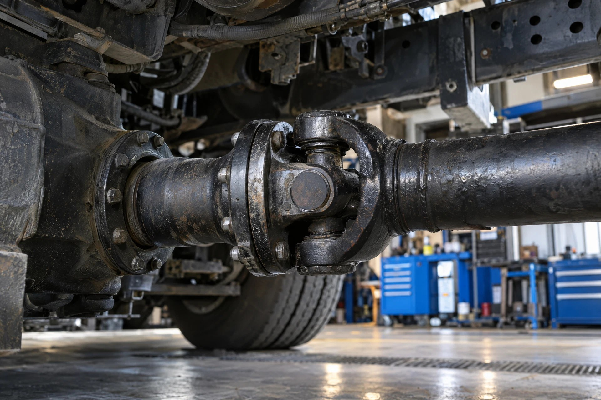

Transmission & driveline: Illustrative system photography—not a location, fitment, or repair-procedure reference.
⚙️ TRANSMISSION DIAGNOSTICS
Transmission: how the pieces connect
Selects ratios between the engine and driveline.
- 1
Input
Receives engine torque through the applicable clutch or coupling.
- 2
Gears + shift control
Select the ratio. Manual and automated systems need different procedures.
- 3
Output
Sends torque to the driveline.
Identify the transmission model first. Separate a selection problem from noise, fluid loss or a clutch problem.
Which symptom matches your truck?
Won’t Go Into GearOpen the focused symptom guide.Shifts HardOpen the focused symptom guide.Misses a ShiftOpen the focused symptom guide.Stuck in GearOpen the focused symptom guide.Fluid LeakOpen the focused symptom guide.Transmission NoiseOpen the focused symptom guide.
See how all truck systems connectFind manufacturer service information
Locate the complaint: input, command, shift mechanism, internal transmission or output/driveline.
🚫 Won’t Go Into Gear💥 Shifts Hard↕️ Misses a Shift🔒 Stuck in Gear💧 Fluid Leak🔊 Transmission Noise🦶 Clutch / Release⚠️ Transmission Fault Code
1️⃣ INPUT
Engine torque enters through clutch, converter or input system
Engine torque enters through clutch, converter or input system
↓
2️⃣ COMMAND / CONTROL
Driver request, electronics, network, air and actuators as equipped
Driver request, electronics, network, air and actuators as equipped
↓
3️⃣ SHIFT / TRANSMISSION
The unit must select and hold the commanded ratio
The unit must select and hold the commanded ratio
↓
4️⃣ OUTPUT
Torque leaves the transmission through the output system
Torque leaves the transmission through the output system
↓
5️⃣ DRIVELINE / AXLE
Driveshaft and axle carry torque to the wheels
Driveshaft and axle carry torque to the wheels
👇 Follow the complaint
🚫 WON’T GO INTO GEAR: Identify transmission design, save faults, verify clutch/input release and required control conditions before internal diagnosis.
💥 HARD SHIFT: Record the exact transition, load and temperature. Separate clutch/input behavior, control strategy and driveline lash from internal transmission problems.
↕️ MISSED SHIFT: Requested versus actual gear, speed information, clutch/torque interruption and actuator operation can reveal where the shift sequence failed.
🔒 STUCK IN GEAR: Secure the vehicle first. Determine whether input torque is trapping the gear, command/actuation is wrong, or mechanical binding is proven.
💧 FLUID LEAK: Clean and trace the highest fresh source. Check correct level procedure, venting and the reason a seal/interface failed.
🔊 NOISE: Decide whether it follows engine RPM, road speed, one gear, acceleration or coast before opening the case.
🧠 Major-work firewall
1️⃣ Can torque enter correctly?
2️⃣ Is the correct gear being requested?
3️⃣ Are power, grounds, network, air and actuators doing what the transmission requires?
4️⃣ Is the complaint actually after the transmission in the driveshaft, axle or wheel end?
5️⃣ What test proves an internal transmission failure before removal or teardown?
🧩 Related systems
IDENTIFY TRANSMISSION → EXACT COMPLAINT → INPUT → COMMAND / CONTROL → ACTUATION → INTERNAL ONLY WHEN PROVEN → OUTPUT / DRIVELINE → VERIFY.
⚠️ Secure and properly support the vehicle before inspection. Keep clear of rotating driveline components and follow current manufacturer procedures for testing, fluid checks, programming, calibration, adjustments and service.